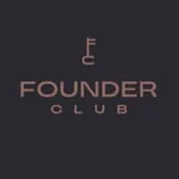
Спецкурс для клуба FOUNDER · Уфа · 25.11.2026Занятие 1 из 8Принцип №1.
ИИ-грамотность
Как думает языковая модель, и почему без этого не работают ни промпты, ни агенты
автор методики
Пока рассаживаются, слайд стоит. Первая фраза: «Ребята, сегодня мы не будем улетать в космос. Сегодня фундамент, без которого не держится всё остальное, включая агентов».
Каждую неделю выходит новая
Гнаться за каждой бессмысленно. Каждый день пробую новое на своих задачах и в компаниях. Сюда приношу только то, что работает
Я ваш проводник. Остальное я отсеял за вас
База, слайд 6. Смысл: инструментов много, принципы одни. Поэтому весь курс про принципы.
Всё, что вы получали в чате группы, делал мой агент
Группу, приглашение каждому в личку, анкету, напоминание. Я только говорил «ок»
К восьмому занятию у каждого из вас будет свой такой. Но начинается он не с агента, а с того, что вы понимаете, как он думает
База, слайд 7. Это правда: группу Founder, приглашения, анкету и напоминание делал агент, а презентацию собирал Claude. Переход: «Как понять, что агент сделал хорошо? Об этом весь сегодняшний урок».
У кого уже есть агенты или Codex в работе?
По каким признакам вы поняли, что агент сделал задачу хорошо?
Запомните свой ответ. Через час вернёмся к нему, и он будет другим
Поднять руки. Клик: второй вопрос, выслушать двух-трёх. Обычно отвечают «ну, работает же» или «посмотрел, вроде нормально». Клик: «Запомните свой ответ. Через час вернёмся к нему». Ответ будет на слайде «Те же черты, только в агенте».
«Даже если вам доступны автономные агенты, вы не сможете пропустить весь предыдущий путь»
Для тех, кто уже с агентами. Своими словами: «Вы можете уже сегодня делать агентов. Но если не прошли базу, будете много чего не понимать: почему агент сделал не то, почему связка сломалась, почему вчера работало, а сегодня нет». Лакхани ведёт обязательный курс по ИИ для всех MBA Гарварда; его вывод из экспериментов: доступ к агентам не создаёт опыта, его надо набрать самому. Клик: что именно не пропустить. Клик: фундамент.
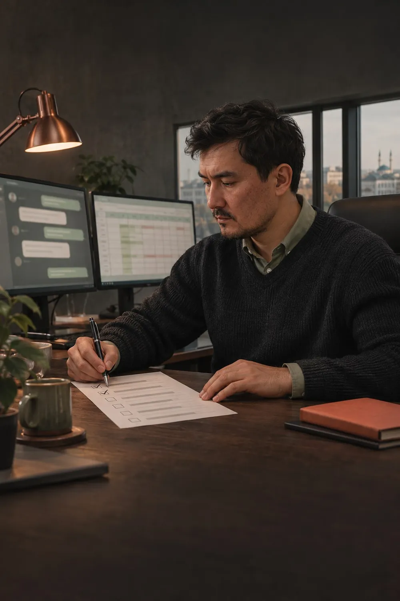
Три способа работать с ИИ
Лакхани, интервью Могилко, 02:29–03:41 · HBS Working Paper 26-036Эксперимент Гарварда в BCG: одна модель, три способа работать. Киборги постоянно выясняют, что лучше получается у модели, а что у них. Кентавры делят задачи и проверяют. Третьи запускают и уходят: Лакхани называет это «засыпают за рулём», даже хорошие специалисты с хорошей моделью теряют бдительность. Его жёсткая фраза студентам: «Если вся твоя роль передавать ответы машины, в чём твоя ценность?»
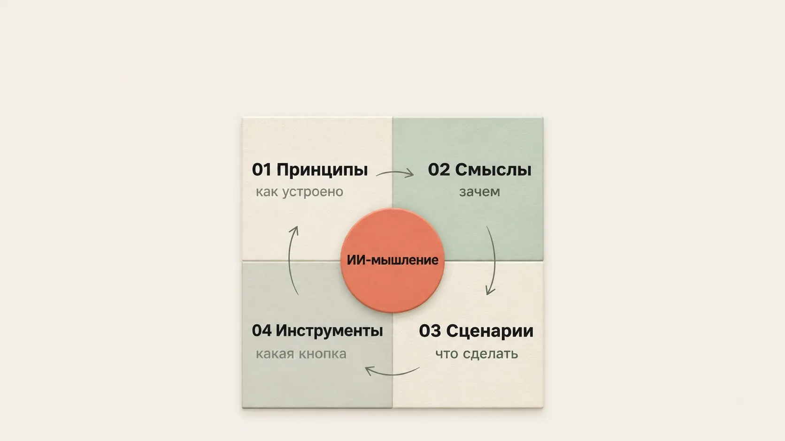
ИИ-мышление: думать вместе с ИИ
Другие учат кнопкам. Кнопки меняются каждый месяц. Мы учим думать
Один слайд, как на всех курсах. Это главный принцип, которому учимся все восемь занятий. Дальше блоки урока называются по теме.
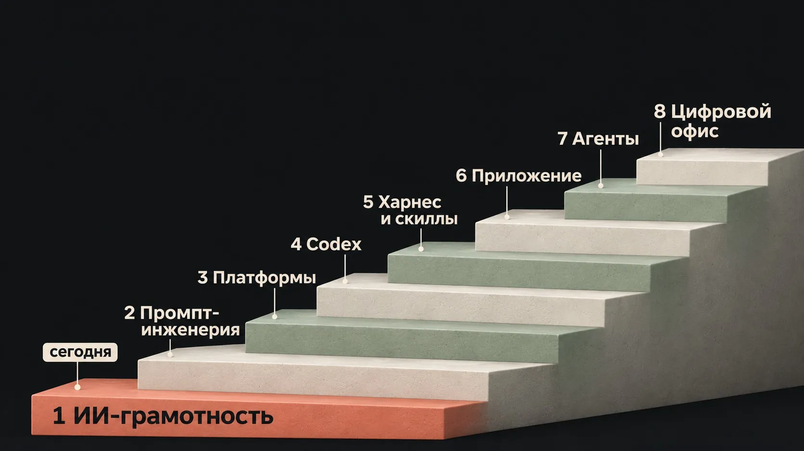
Восемь занятий: восемь наборов принципов
Своими словами: «Принципы бывают разные. Есть принципы работы в чате, принципы промпт-инженерии, принципы в харнесе, принципы агентских сценариев. Сегодня принцип номер один, грамотность: синхронизируемся, как работает модель, как работает этот мозг. Чтобы на втором занятии перейти в промпт-инженерию, на третьем в платформы, где можно делать и дашборды, и CRM, а потом уйти в кодер-агентов». Клик: первые три ступени, клик: Codex, харнес, приложение, клик: агенты и цифровой офис.
Тринадцать бизнесов, три уровня
Зал смешанный, и это нормально. Новичку сегодня дадим точку входа, опытным покажем, почему у них ломаются связки. В чате у многих уже Claude и Codex, у кого-то свой сервер и боты.
Что вы хотите собрать и где мы это закроем
Всё это агенты. И каждый из них думает так, как мы разберём сегодня
Формулировки из ваших анкет. Новичкам: всё это реально за восемь занятий. Опытным: именно здесь первыми ломаются связки, если не понимаешь модель.
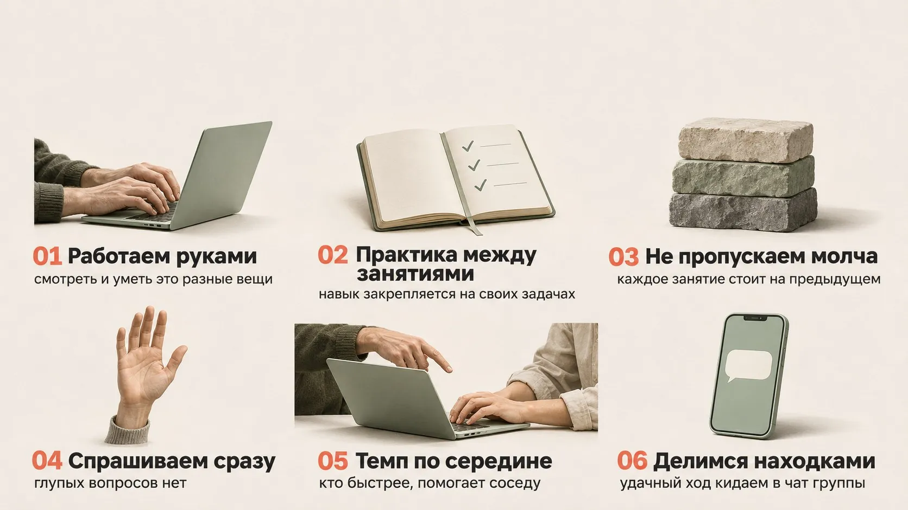
Шесть договорённостей
База, слайд 20. За минуту. Шпаргалка по QR будет перед практикой.
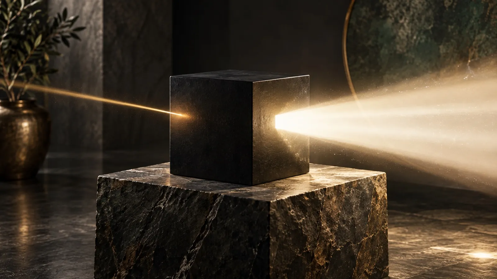
Как устроен мозг
Синхронизируемся: что у модели внутри и почему она отвечает именно так
Раздел. Для опытных: «Даже если вы это знаете, слушайте, к чему я веду. В конце блока свяжем каждую деталь с тем, почему ломаются агенты».
ИИ, нейросеть, языковая модель
База, слайд 25. Выравниваем термины, быстро.
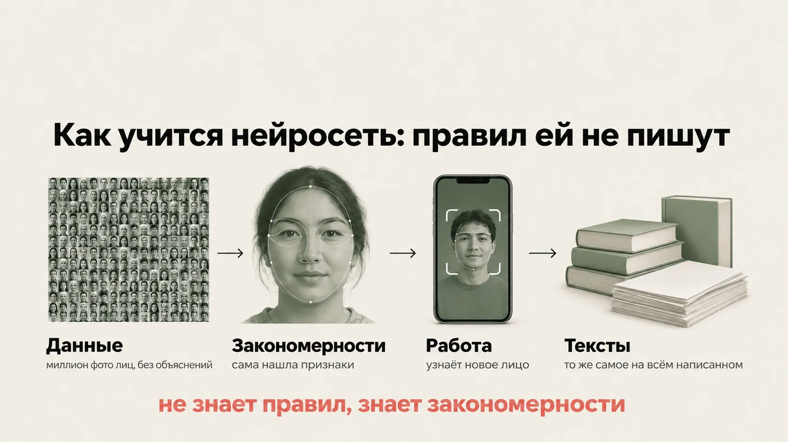
База, слайд 26, перенесено в одну линию. Ключ для всего урока: закономерности, а не правила.
От многих узких к одной, которой дали руки
База, слайд 27. Главное: агент не новый мозг, это та же модель, которой дали руки. Вернёмся к этому.
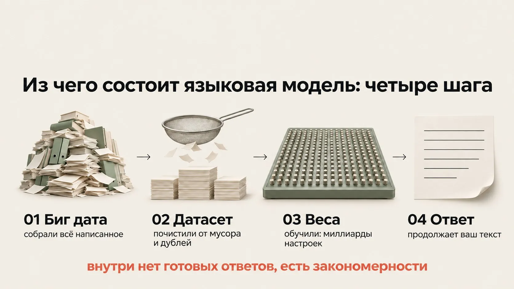
База, слайды 33–35 одной линией. Биг дата, датасет и веса подробно лежат в шпаргалке.
Она прочитала почти всё, что написало человечество
Главный навык: допустить, что задачу можно решить по-другому
Мысль Альберта (база, слайд 54, и доклад 18.11): ИИ это знания всего мира, значит, и лучшие методы решения ваших ежедневных задач. Первая стадия
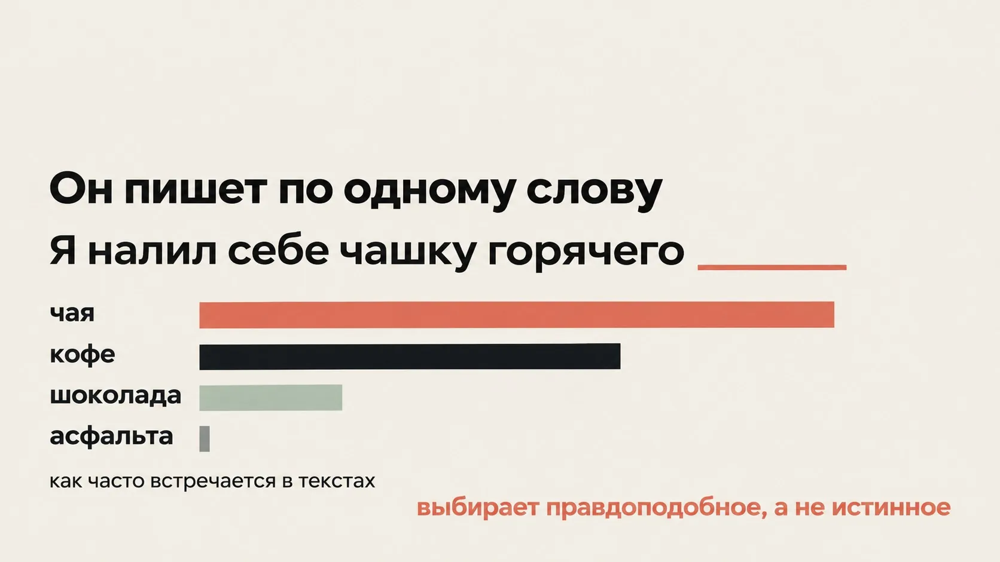
Если правдоподобно, но неправда, он скажет это тем же уверенным тоном
База, слайд 38, без процентов (точного замера нет, показываем идею). Он каждый раз выбирает следующее слово по вероятности. Цифры, даты, имена, ссылки, нормы проверяем всегда.
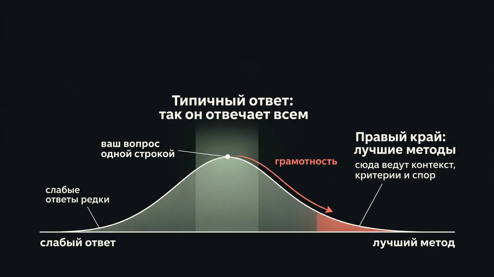
Внутри все методы мира. По умолчанию вы получаете средний
Новый слайд, связывает мысль Альберта и Лакхани. Модель прочитала всё, включая лучшие решения, но по вероятности тянет к середине: самое частое продолжение. Лакхани: если отдать модели выбор подхода и не следить, она возьмёт самый типичный вариант, а не тот, который выделит вас. Клик: вопрос одной строкой даёт середину. Клик: правый край. Клик: цитата. Весь курс про то, как вытягивать правый край.
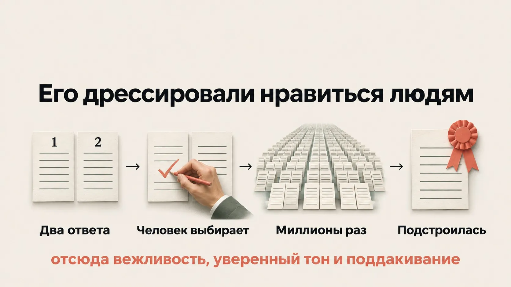
База, слайд 36. Запомните слово «нравиться». Через пять минут оно объяснит, почему ИИ ведёт себя как психопат.
Китайская комната
Так и модель: подбирает ответ по закономерностям. Понимает ли она, спорят сорок лет. Нам важно, что ответы работают
База, слайд 37. Можно пропустить, если зал уже понял идею закономерностей.
База, слайд 39. Разговаривайте с ним как с новым сильным сотрудником, а не как с поисковой строкой. В практике интервью это ввод стажёра в должность.
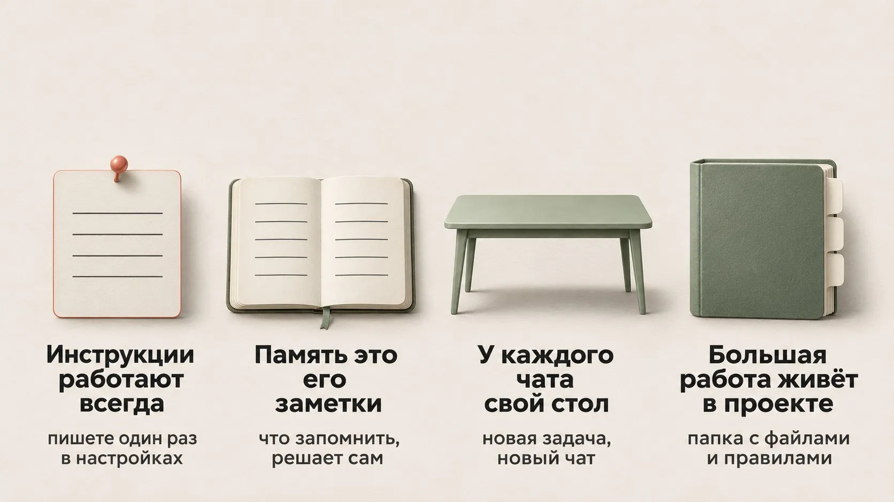
Память в 2026 году: он помнит вас, но по-разному
База, слайд 40, коротко. Это нужно для практики: сегодня кладём инструкцию и досье в настройки.
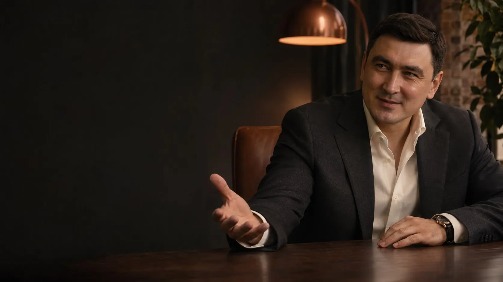
ИИ-психопат
Обаятельный, уверенный, без чувства вины. Его надо знать в лицо, прежде чем давать ему ключи от бизнеса
Блок Альберта. Рассказ своими словами: почему ИИ ведёт себя как психопат и какие паттерны ты сам ловил. Следующий слайд даёт пять черт с объяснением из механики, которую только что разобрали. Если твои паттерны другие, проматывай.
Пять черт, которые надо знать в лицо
Черновик черт, Альберт, поправь своими паттернами. Логика слайда: каждая черта психопата объясняется механикой, которую разобрали в первой части. Это не характер, это устройство. Значит, это предсказуемо и с этим можно работать.
Возразили модели, а она стала спорить настойчивее
«Он несовершенен, но говорит очень убедительно. И убедить нас ему действительно легко». Лакхани, 04:28
Классический психопат: когда его ловишь, он не признаёт, а давит обаянием и аргументами. Модель делает то же самое, и опытные консультанты BCG на это попадались. Значит, спорить надо по существу, с фактами, а не «ты уверен?».
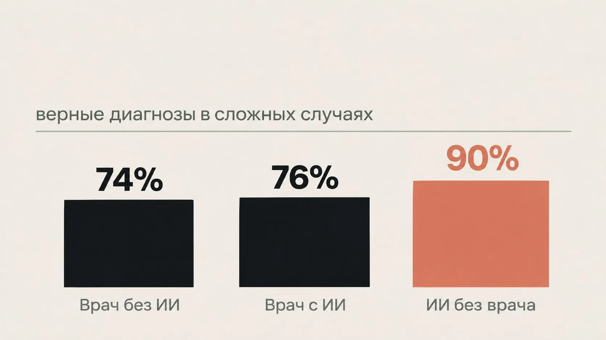
Врачам дали ИИ. Лучше не стало
Врачи не слушали ИИ, когда он с ними не соглашался. Знания мира сузили до своего уровня
Из доклада 18.11. Стэнфорд и Гарвард. Врачи были уверены в своём диагнозе и не дослушивали ИИ, когда он предлагал другое. Лишь единицы отдали ему всю историю болезни целиком. Это про любого опытного собственника: «я лучше знаю свой бизнес».
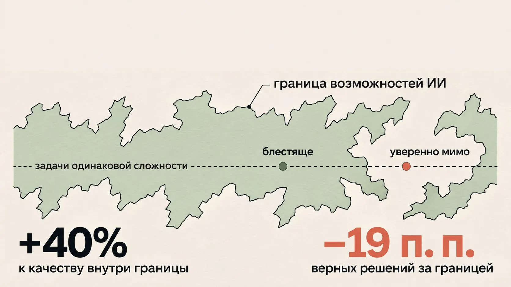
Граница неровная: одно блестяще, соседнее мимо, тем же тоном
Обратная ошибка: поверили без проверки. Неровная граница: снаружи задачи выглядят одинаково, а модель одну решает, другую нет, и по тону это не видно. Список «что можно отдавать ИИ» один раз не составить: новая модель сдвигает границу.
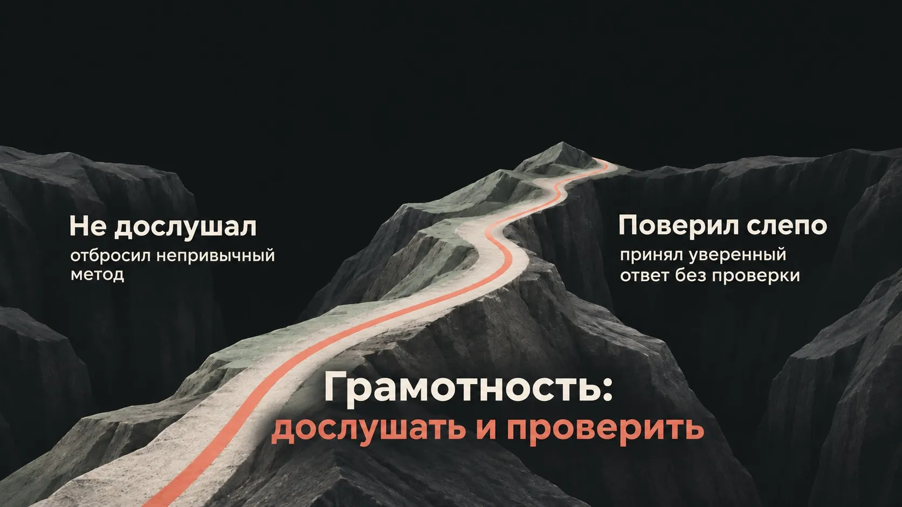
Грамотность находится между двумя ошибками
Итог блока. У врачей связка оказалась хуже модели. У консультантов за границей тоже. Хорошая связка: дослушал, оспорил, проверил.
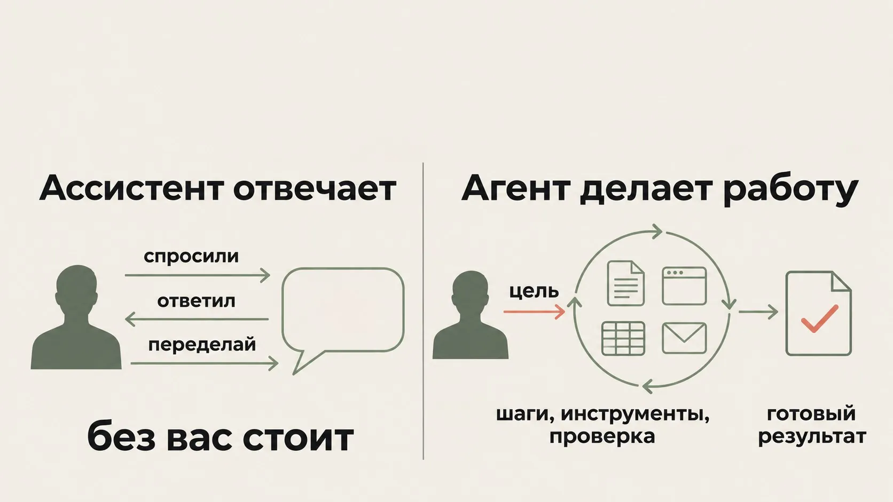
Агент это ассистент, которому дали руки, память и цель
База, слайды 41–42.
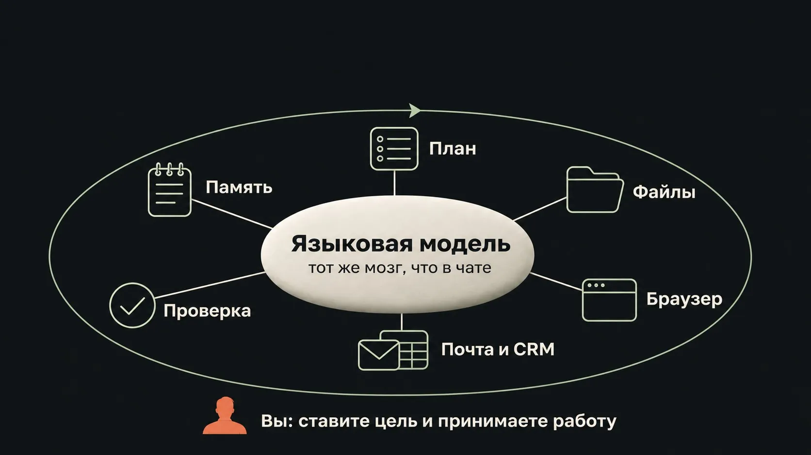
Мозг тот же. Ему дали руки
Codex, Claude Code, Manus: в центре та же модель. Всё, что она делает в чате, она делает и в агенте. Только без вас
База, слайд 44, нарисован схемой. Клик: руки агента. Клик: человек на контроле. Клик: главный вывод. Все пять черт психопата едут внутри агента.
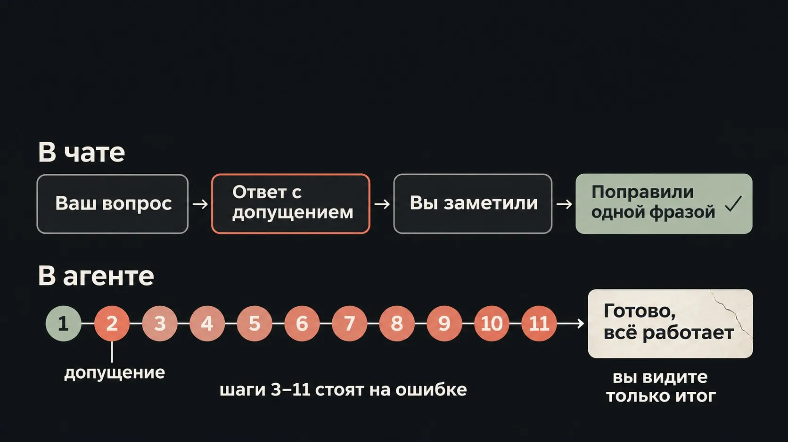
В агенте ошибка становится фундаментом
Проверить агента может только тот, кто знает, как ошибается модель
Главный слайд для опытных. Своими словами: «Если ты уже делаешь агентов, а этот путь не прошёл, у тебя всегда будут проблемы. Связки будут ломаться, и ты не будешь понимать почему». Модель сделала допущение на втором шаге, и девять шагов построены на нём. А докладывает агент уверенно: он же психопат.
Те же черты, только в агенте
Хорошую работу агента видит тот, кто знает, как он ошибается
Вернуться к вопросу из начала: «По каким признакам вы поняли, что агент сделал хорошо?» Теперь ответ другой: по тому, что я проверил места, где модель ошибается. Это и есть
Я никогда не принимаю первый ответ. Никогда
«В итоге под работой будет стоять ваше имя. Я увольнял тех, кто оправдывался: так ответил искусственный интеллект». 12:19
Лакхани либо заранее настраивает модель возвращаться к задаче и искать альтернативы, либо сам начинает возражать. Это и есть «первый ответ черновик» и «отвечаете вы».
Четыре вопроса после первого ответа
Это противоядие от всех пяти черт сразу. Не «ты уверен?», а конкретный вопрос, который заставляет модель уйти от середины.
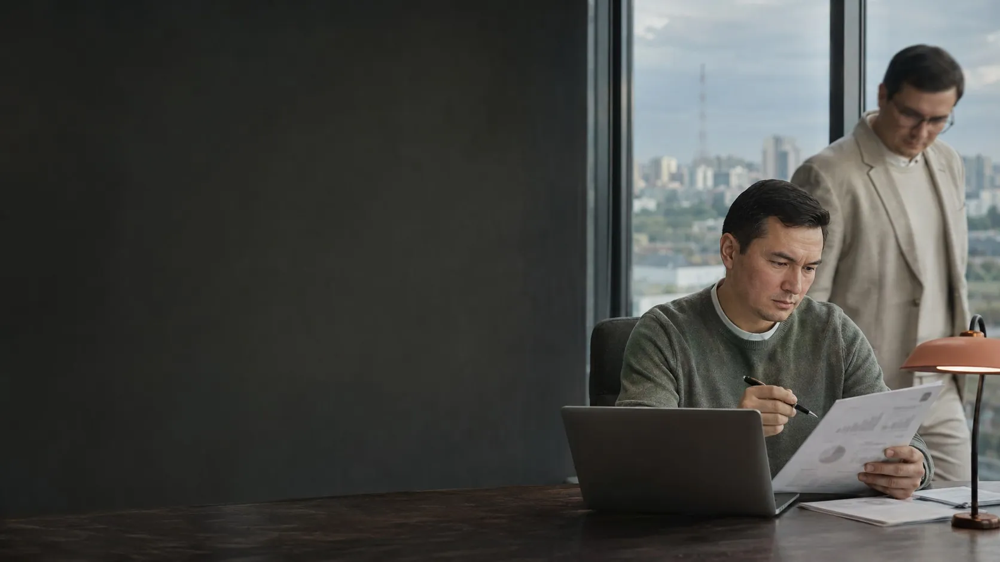
Сотрудник принёс работу, сделанную с ИИ. Четыре вопроса, прежде чем подписать
НОВЫЙ СЛАЙД (25.11 утро), ты его ещё не вёл, можно промотать. Для собственников: ваши сотрудники уже приносят вам ответы ИИ. Те же черты психопата теперь приходят к вам через людей. Четыре вопроса по одному клику. Связь: середина кривой, уверенный тон, «не дослушал», правило Лакхани «под работой стоит ваше имя».
Пусть помечает, на чём держится каждое утверждение
Сначала возражение, потом ответ. Кай-Фу Ли прописал это в системном промпте: модель начинает с того, где вы неправильно смотрите на задачу
Метка не доказывает факт. Она показывает, что проверять первым: всё с меткой «догадка» и «в рамках условия»
Для тех, у кого агенты: вставьте это в инструкцию агента, и в его отчётах станет видно, где он знает, а где додумал. Это прямой ответ на «психопат врёт тем же тоном».
Сначала направление задаёте вы, а ИИ помогает усилить вашу идею. Наоборот это не работает
В H&M проверили: идею, которую человек не считает своей, он не готов защищать перед коллегами
Для собственников: стратегию, которую написал ИИ, вы не продадите команде. Сначала ваша мысль, потом модель её усиливает.
Вы просите письмо, а получаете метод
«Сейчас напишу ответ»
- Открыл претензию, разозлился
- Начал писать с первой строки
- Три раза переписал
- Отправил и сомневаюсь
Сначала структура, потом текст
- Какие факты есть, какие спорные
- Что мы обязаны, а что нет
- Три варианта ответа и риск каждого
- Текст под выбранный вариант
Через месяц вы сами начинаете раскладывать так, ещё до того, как открыли чат. Это и есть новое мышление
База, слайд 55. Это правый край кривой: метод сильного юриста. Он приходит, если дослушать.
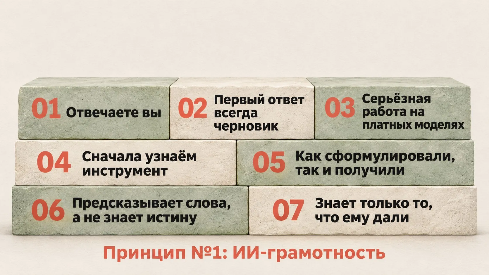
Семь принципов, которые не меняются
Выйдет новая модель, поменяются кнопки. Эти семь останутся
База, слайд 46, слова Альберта. Теперь у каждого принципа видно, из какой черты модели он вытекает. В шпаргалке список лежит отдельно: проверяйте по нему любой новый инструмент.
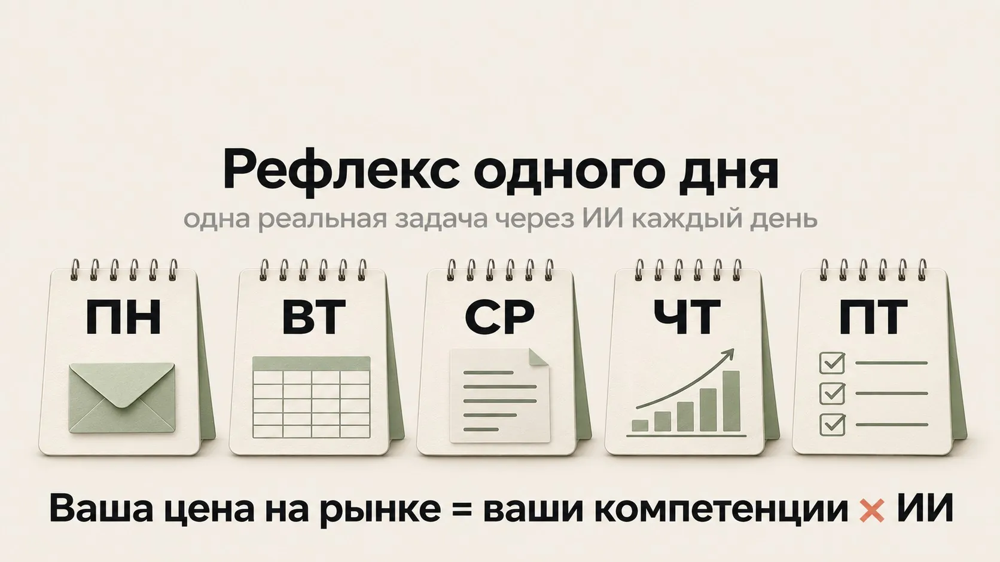
Не «изучить ИИ», а перестать решать, идти ли к нему
База, слайд 59. Переход к практике.
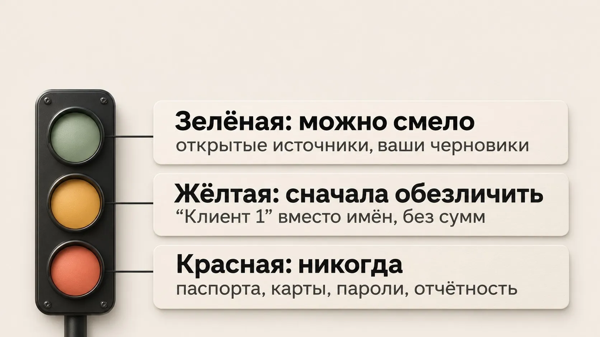
Светофор данных
Сомневаетесь, какая зона? Считайте, что красная. Любой чат в браузере это публичное облако
База, слайд 61. Для клиники и юристов отдельно: медицинские и персональные данные только на своём сервере, это тема занятия 6.
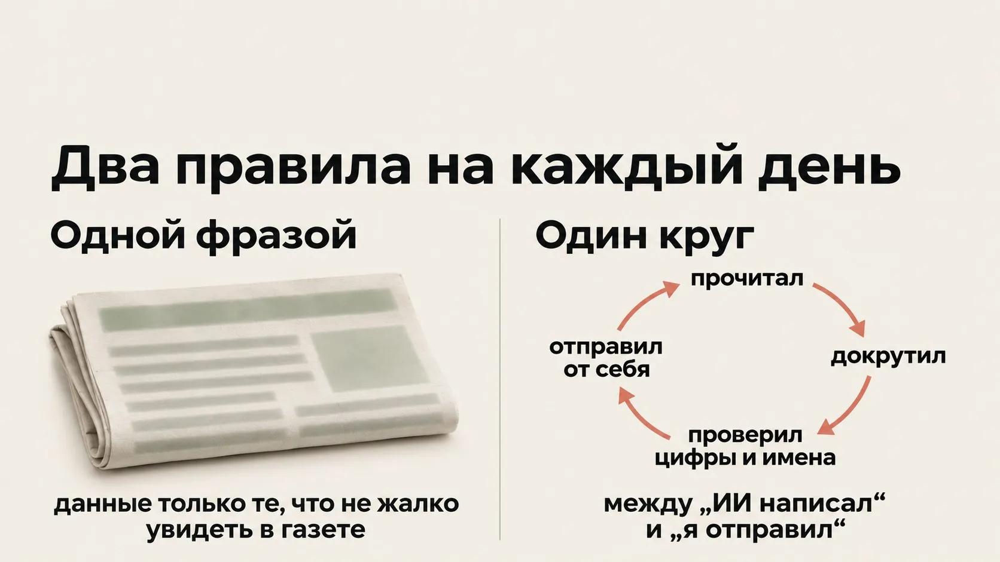
База, слайд 62.
Собираем личный контур
Все промпты в шпаргалке. Нажали «Копировать», вставили, отправили
База, слайд 64. После всей теории модель должна узнать вас: это ввод стажёра в должность. У кого персонализация уже настроена, обновите досье в шагах 3–4, а потом сразу второй круг на задаче, которую давали агенту. Помогайте соседям.
Рабочее место: шесть кнопок, и всё
База, слайд 65. Без VPN запасной вариант: Qwen, chat.qwen.ai, то же окно.
Инструкция качества
Вставляется один раз и меняет качество всех будущих ответов. Модель сама придумывает критерии и доводит ответ до них
Сначала сам придумай критерии отличного ответа
Оцени свой черновик по ним
Не дотягивает до 98 из 100: переделай
Покажи мне только финальную версию
Промпт дословно из канона урока 1. Пока все вставляют, пройти по залу.
Он сам возьмёт у вас интервью
Стажёру нужен ввод в должность. Десять вопросов по одному, отвечайте голосом. В конце он соберёт рабочее досье
Задавай по одному вопросу и жди ответа
10 вопросов: компания, роль, три задачи, с чем работаю, кому сдаю…
К каждому расшифровка в скобках
В конце: === РАБОЧЕЕ ДОСЬЕ === до 1500 знаков
Промпт дословно из канона урока 1. Пока все вставляют, пройти по залу.
Кладём досье туда, где он его не забудет
Досье в чате живёт до конца чата. Досье в настройках живёт всегда: каждый новый чат он начинает уже с ним
База, слайд 68. Кто делал персонализацию раньше: не удаляйте старое, дополните.
Проверяем, что он вас запомнил
В старом чате он помнит разговор. Нам надо проверить, что знание легло в память
База, слайд 69.
Какие задачи решаем вместе
Он знает вашу роль. Пусть сам скажет, чем полезен: десять сценариев под вас и три, с которых начать прямо сейчас
Ты знаешь, чем я занимаюсь
Дай 10 сценариев: вход, выход, сколько экономит за неделю
Выбери три, которые легко начать сейчас
По каждому: с чего начать
Промпт дословно из канона урока 1. Пока все вставляют, пройти по залу.
Задача номер один своими словами
Никаких формул: что за задача, для кого, в каком виде результат. Не то, что хотели? Скажите, что не так, прямо здесь
База, слайд 71. Хороший знак, когда модель спрашивает недостающее, а не сразу обещает клиенту деньги.
Получили ответ? Теперь заставьте его спорить с собой
Продвинутым: то же самое на последней задаче, которую вы давали агенту
Новое, по Лакхани. Если время поджимает, дать как задание до пятницы.
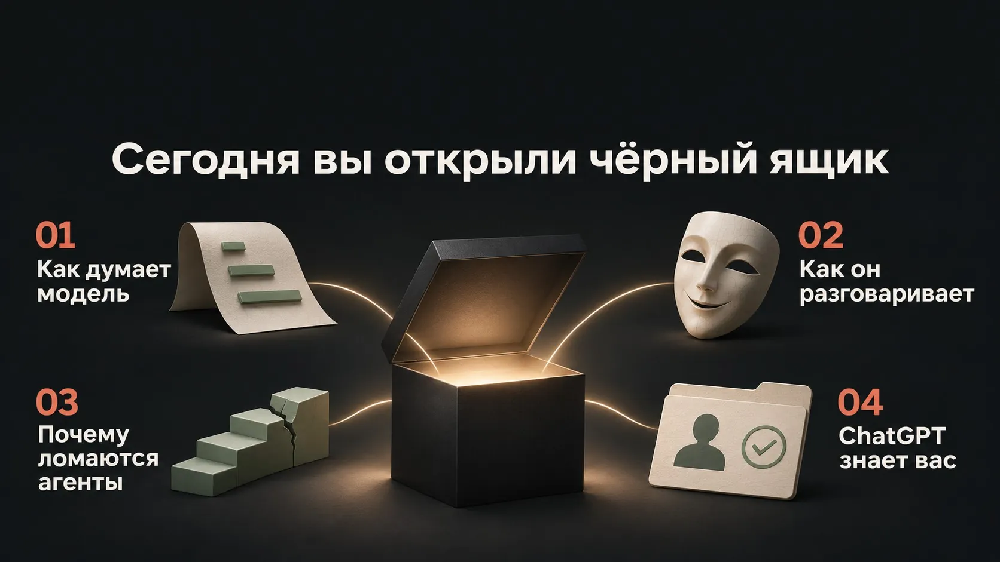
База, слайд 72, переписан под урок.
Одна и та же нейросеть делает человека сильнее или слабее
Разница не в нейросети, а в том, как человек с ней думает
Из доклада 18.11. Школьники с обычным ChatGPT легли в экзоскелет. Та же нейросеть в роли репетитора сделала их сильнее. Опытные врачи за три месяца разучились без ИИ.
Сначала сам. Потом машина решает тысячу
Мостик к занятию 2. Лакхани: сначала освоить основу и сделать что-то самому, а затем передать выполнение машине и наблюдать за закономерностями. Перенос Альберта: первые 50 промптов сами, потом сравниваем с тем, как пишет модель.
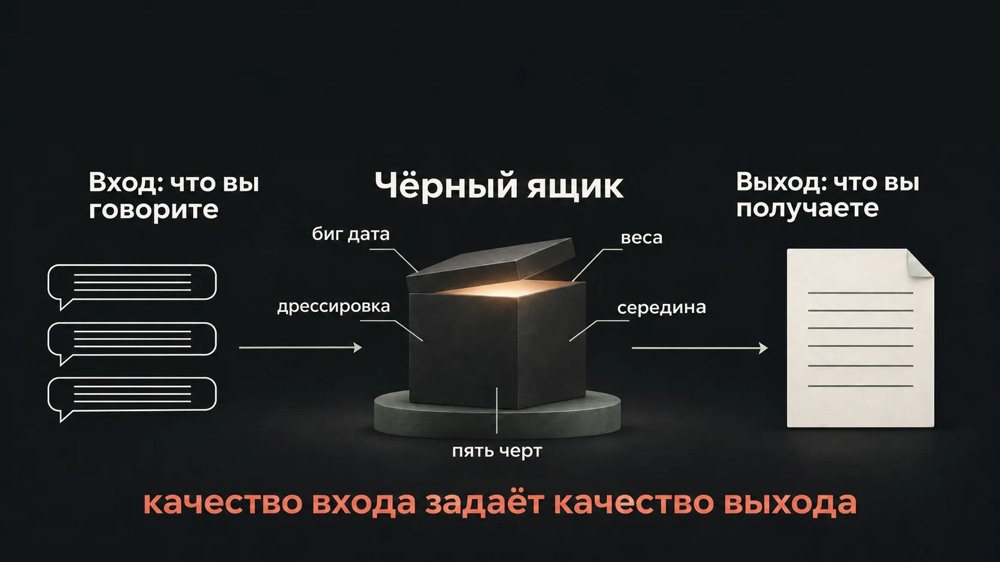
Чёрный ящик открыт. Осталось научиться с ним говорить
Язык для этого один: промпт. Принцип №2, пятница
База, слайд 73.
ИИ не сделает вашу работу за вас.
Он сделает её вместе с вами.
Финал. До пятницы: рефлекс одного дня и второй круг на одной своей задаче.